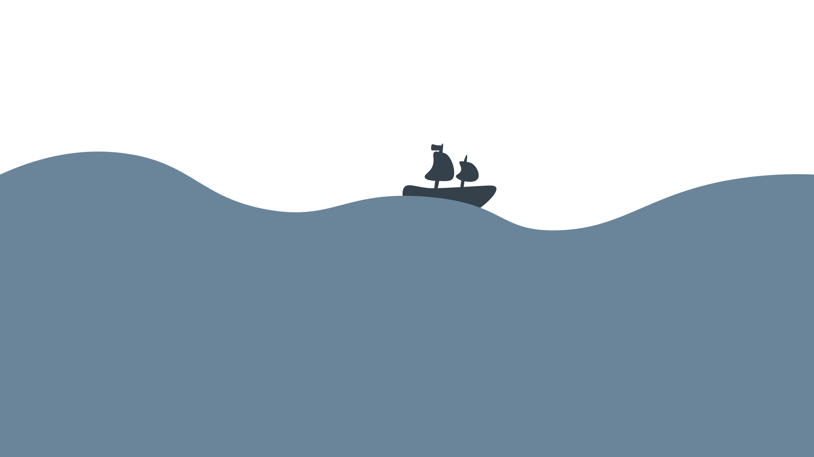
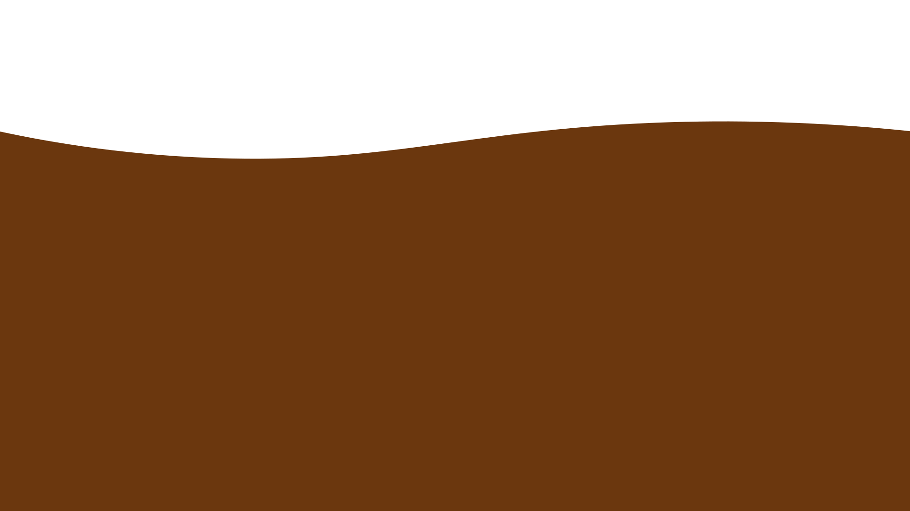

De westerse mens weet hoe het paradijs eruitziet, sinds Adam en Eva werden verbannen: weelderige natuur zonder menselijke sporen.
Verban de mens uit de laatste stukken wildernis.
De westerse mens weet hoe het paradijs eruitziet, sinds Adam en Eva werden verbannen: weelderige natuur zonder menselijke sporen. Dat is precies hoe we tegen de laatste wildernis aankijken. De witte mens definieert ‘echte natuur’ door haar eigen afwezigheid.
De westerse mens weet hoe het paradijs eruitziet, sinds Adam en Eva werden verbannen: weelderige natuur zonder menselijke sporen. Dat is precies hoe we tegen de laatste wildernis aankijken.
David Attenborough mag er ons in zijn BBC-natuurdocumentaires een glimp van tonen, daarna is het wegwezen. En een inheemse stam is tot daaraantoe (denk aan Disneys Pocahontas) maar
de witte mens definieert ‘echte natuur’ door haar eigen afwezigheid. En zo gek is dat idee ook niet.
De afgelopen eeuwen heeft de westerse mens al heel veel niet-menselijk leven kapot gemaakt. Dier- en plantensoorten sterven wereldwijd in razend tempo uit.
De afgelopen eeuwen heeft de westerse mens namelijk al heel veel niet-menselijk leven kapot gemaakt. Door industrialisering en de daarmee gepaard gaande bevolkingsgroei en toenemende consumptie sterven dier- en plantensoorten wereldwijd in razend tempo uit (steeds sneller zelfs).
Zo zijn we in de afgelopen honderd jaar maar liefst twee derde van alle wilde zoogdieren op aarde verloren. Een kwart van alle onderzochte plant- en diersoorten is nu met uitsterven bedreigd.
De afgelopen eeuwen heeft de westerse mens namelijk al heel veel niet-menselijk leven kapot gemaakt. Door industrialisering en de daarmee gepaard gaande bevolkingsgroei en toenemende consumptie sterven dier- en plantensoorten wereldwijd in razend tempo uit (steeds sneller zelfs).
Zo zijn we in de afgelopen honderd jaar maar liefst twee derde van alle wilde zoogdieren op aarde verloren. Een kwart van alle onderzochte plant- en diersoorten is nu met uitsterven bedreigd. Niet echt harmonieus.
Voor 2030 moet minstens 30 procent van de wereldbol, zowel land als zee, apart worden gezet voor de natuur.
De Biodiversiteitstop heeft deze top het 30x30-plan als eerste en belangrijkste concrete doel. Dat houdt in: voor 2030 minstens 30 procent van de wereldbol, zowel land als zee, apart zetten voor de natuur. Dat wil zeggen: voor alles, behalve voor mensen.
Deze 30 procent beschermde natuur is dan hoogstens nog toegankelijk voor toerisme en onderzoek. Maar
niet om in te wonen, gewassen te verbouwen, te kappen, te jagen, grondstoffen te delven, of op wat voor manier dan ook te exploiteren.
De Biodiversiteitstop heeft deze top het 30x30-plan als eerste en belangrijkste concrete doel. Dat houdt in: voor 2030 minstens 30 procent van de wereldbol, zowel land als zee, apart zetten voor de natuur. Dat wil zeggen: voor alles, behalve voor mensen.
Deze 30 procent beschermde natuur is dan hoogstens nog toegankelijk voor toerisme en onderzoek. Maar
niet om in te wonen, gewassen te verbouwen, te kappen, te jagen, grondstoffen te delven, of op wat voor manier dan ook te exploiteren. Dat doen we met die ándere twee derde.
Het idee om een deel van de apart te zetten begon in 2016 met het boek Half-Earth van de beroemde en recent overleden Amerikaanse ecoloog E.O. Wilson.
Het idee om een significant deel van de aarde opzij te zetten is in korte tijd populair geworden.
Het begon in 2016 met het boek Half-Earth van de beroemde en recent overleden Amerikaanse ecoloog E.O. Wilson. Daarin pleitte hij ervoor om de halve aarde opzij te zetten als beschermd natuurgebied, door de mensen eruit te knikkeren.
Op dit moment wordt 16,6 procent van het land en 7,7 procent van de zee formele beschermd.
Sinds Wilson dit idee opperde, hebben verschillende groepen ecologen geprobeerd te berekenen welk deel van het land en de zee beschermd moet worden, om de resterende biodiversiteit veilig te stellen. Hun schattingen komen uit op een minimum van 30 tot 70 procent - het is behoorlijk nattevingerwerk.
Op dit moment geniet 16,6 procent van het land en 7,7 procent van de zee een zekere mate van formele bescherming.
Vele miljoenen mensen wereldwijd leven in het ecosysteem waar zij hun eten uit halen.
Een verbod op kleinschalige landbouw of het doden van wilde dieren en planten zou hun manier van leven onmogelijk maken.
Tegelijkertijd is er een storm van kritiek op gang gekomen, zowel van wetenschappers als van lokale en internationale actiegroepen. Want
vele miljoenen mensen wereldwijd, veelal in niet-westerse landen, leven nog ín het ecosysteem waar ze hun eten uit halen, in min of meer zelfvoorzienende gemeenschappen.
Niet alleen compleet geïsoleerde gemeenschappen diep in de Amazone, maar alle denkbare grijstinten. Een verbod op kleinschalige landbouw of het doden van wilde dieren en planten zou hun manier van leven onmogelijk maken.
De 30 procent zouden gebieden moeten zijn waar nu nog de meeste wilde planten en dieren voorkomen,
en die voor grootschalige exploitatie minder geschikt zijn. Dat zijn de plekken waar inheemse bevolking vaak al eeuwen wonen.
De eerste studies die onderzoeken welke gebieden onder die 30 procent zouden moeten vallen, wijzen
op de gebieden waar nu nog de meeste wilde planten en dieren voorkomen, en die voor grootschalige exploitatie minder geschikt zijn. Dat zijn precies de plekken waar al eeuwen of zelfs millennia lang gemeenschappen wonen die er duurzaam leven - in elk geval ten opzichte van geïndustrialiseerde samenlevingen - van jacht, visserij en kleinschalige landbouw.

De traditioneel levende gemeenschappen staan in veel landen onder grote druk van hun regering
- dezelfde overheid die het 30x30-plan zal moeten uitvoeren. En zo bepalen wie er wél, en wie níet in een natuurgebied mag leven.
De traditioneel levende gemeenschappen staan in veel landen onder grote druk van hun regering,
Dezelfde overheid die het 30x30-plan zal moeten uitvoeren. En zo bepalen wie er wél, en wie níet in een natuurgebied mag leven. Zelfvoorzienende gemeenschappen dragen namelijk niet bij aan economische ontwikkeling.
Maar dat is makkelijker gezegd dan gedaan. Hoe bepaal je wie er wél, en wie níet in een natuurgebied mag leven? Wat deze vraag extra problematisch maakt, is dat juist
traditioneel levende gemeenschappen in veel landen onder grote druk staan van hun regering
- dezelfde overheid die het 30x30-plan zal moeten uitvoeren. Juist zelfvoorzienende gemeenschappen dragen niet bij aan economische ontwikkeling. In een belangenstrijd over grondrechten, zij het voor exploitatie of voor natuurbescherming, zijn deze mensen al snel de klos.



Dat natuur pas écht natuur is zonder mensen, is een recente uitvinding van de westerse cultuur.
Een menselijke fantasie. Overal wonen al minstens tienduizend jaar mensen, en die drukten overal een stempel op het landschap.
Dat natuur pas écht natuur is zonder mensen, is een recente uitvinding van de westerse cultuur.
Een menselijke fantasie. Overal wonen al minstens tienduizend jaar mensen, en die drukten overal een stempel op het landschap.
Neem de eerste natuurparken in de Verenigde Staten, die eind negentiende eeuw ontstonden. Dankzij die nationale parken bleven bossen met duizenden jaren oude bomen ook de afgelopen honderd jaar gespaard. Het zijn de grootste toeristische trekpleisters ter wereld geworden.
Dat natuur pas écht natuur is zonder mensen, is een recente uitvinding van de westerse cultuur.
Maar helaas, dergelijke wildernis is een menselijke fantasie. Of het nu de Amerikaanse prairies zijn, het Amazonewoud of de Afrikaanse savanne, overal wonen al minstens tienduizend jaar mensen, en die drukten overal een stempel op het landschap.
De Amazone was zonder mensen ook bos geweest. Maar de soorten bomen en dieren die er leven zijn wel degelijk actief veranderd door mensen, toen en nu. Neem de eerste natuurparken in de Verenigde Staten, die eind negentiende eeuw ontstonden. Dankzij die nationale parken bleven bossen met duizenden jaren oude bomen ook de afgelopen honderd jaar gespaard. Het zijn de grootste toeristische trekpleisters ter wereld geworden.
De prijs ervoor werd betaald door inheemse bevolkingsgroepen
die daar al duizenden jaren leefden. Ook nu nog claimen ze hun historische landrechten, en tot op de dag van vandaag worden die hen door de overheid geweigerd.
De prijs ervoor werd betaald door inheemse bevolkingsgroepen.
Zoals de Ahwahnechee, die al duizenden jaren in de Yosemite-vallei leefden, of de Shoshone die al meer dan elfduizend jaar leefden in wat nu Yellowstone National Park is. Ook nu nog claimen ze hun historische landrechten, en tot op de dag van vandaag worden die hen door de overheid geweigerd.
De scheiding van mens en natuur de kern van het koloniale gedachtegoed, waaruit de explosie van wereldwijde natuurvernietiging is voortgekomen.
Het aanpassen van de westerse leefstijl is niet de bedoeling en dat is het nooit geweest.
De scheiding van mens en natuur de kern van het koloniale gedachtegoed, waaruit de explosie van wereldwijde natuurvernietiging is voortgekomen.
Het aanpassen van de westerse leefstijl is niet de bedoeling en dat is het nooit geweest.
Tot na de Tweede Wereldoorlog werd de Indiase bevolking geregeerd door Europese ondernemers. Kolonisten zetten plantages op voor koffie, tabak, suiker en noem maar op, en buitten daarmee systematisch anderen uit. Niet alleen menselijke bewoners, maar hele ecosystemen werden omgevormd en aan het werk gezet voor die producten. De grootschalige natuurvernietiging die dat tot gevolg had, werd afgeschoven op de lokale bevolking onder het mom van ‘beschaving’.
Zo gaat het overal op de wereld, vertellen onderzoekers Vijay Kolinjivadi en Gert Van Hecken, beiden werkzaam aan het Instituut voor Ontwikkelingsbeleid (IOB) van de Universiteit Antwerpen. Volgens hen is de scheiding van mens en natuur de kern van het koloniale gedachtegoed, waaruit de explosie van wereldwijde natuurvernietiging is voortgekomen.
Dat betekent dat het 30x30-plan geen radicale breuk is met het pijnlijke verleden, maar juist een voortzetting ervan. ‘Het aanpassen van de westerse leefstijl is niet de bedoeling’, zegt Kolinjivadi, ‘en dat is het nooit geweest.’ Als voorbeeld noemt hij gemarginaliseerde minderheden in India. Om hun situatie goed te begrijpen, moet je de geschiedenis van India kennen. India werd vanaf de zeventiende eeuw stukje bij beetje gekoloniseerd door Europese landen – ook Nederland – tot het in de achttiende eeuw vrijwel volledig werd veroverd door de British East India Company.
Tot na de Tweede Wereldoorlog werd de Indiase bevolking geregeerd door Europese ondernemers. Kolonisten zetten plantages op voor koffie, tabak, suiker en noem maar op, en buitten daarmee systematisch anderen uit. Niet alleen menselijke bewoners, maar hele ecosystemen werden omgevormd en aan het werk gezet voor die producten. De grootschalige natuurvernietiging die dat tot gevolg had, werd afgeschoven op de lokale bevolking onder het mom van ‘beschaving’.
De westerse drang om deze ecosystemen te redden, ontstond vanuit de angst dat droogte of vloedgolven de plantages zouden vernietigen.
Het was niet de natuur, maar de bron van de westerse welvaart die beschermd moest worden.
White saviorism,
het verlangen van witte overheersers om de onderdrukte zwarte bevolking te ‘redden’ van de door henzelf veroorzaakte ondergang.
White saviorism,
het verlangen van witte overheersers om de onderdrukte zwarte bevolking te ‘redden’ van de door henzelf veroorzaakte ondergang.
Sinds de Indiase onafhankelijkheid in 1947 is de huidskleur van de machthebbers niet meer wit. Maar hun beleid lijkt net zo goed white saviorism. De elite mat zich een rijk westers leven aan, dankzij de producten en winsten van plantages en fabrieken waar de grondstoffen worden verwerkt. Dat gaat ten koste van bestaande ecosystemen, maar de verantwoordelijkheid ervoor komt te liggen bij de resterende inheemse gemeenschappen.
In de afgelopen jaren werden in India tienduizenden van de inheemse bevolkingsgroepen met geweld onteigend van wat nu ‘mensvrije’ natuurreservaten zijn. Ze moesten niet wijken voor plantages, maar voor tijgers. Deze bescherming van de tijger lijkt te werken en is geheel in de geest van het 30x30 plan.
De wet die deze bevolkingsgroep landrechten geeft, had minder prioriteit dan de natuurbeschermingswet.
In de afgelopen jaren werden daar tienduizenden Adivasi met geweld onteigend van wat nu ‘mensvrije’ natuurreservaten zijn. De wet die Adivasi landrechten geeft, had minder prioriteit dan de natuurbeschermingswet. Ze moesten niet wijken voor plantages, maar voor tijgers.
Westerse natuurbeschermingsorganisaties zoals het WWF besteden vele miljoenen aan het creëren en instandhouden van dergelijke reservaten. En het lijkt te werken – voor de tijger. Al blijft de populatie zeer kwetsbaar, de tijger is een van de weinige grote succesverhalen van natuurbescherming.
De tijgerbescherming is geheel in de geest van het 30x30-plan, en stelt India in staat om zich er met relatief weinig eigen investeringen internationaal aan te committeren. Adivasi hebben de prijs al betaald. Terwijl zij nou juist in staat waren om van het bos te leven zónder het leven van tijgers onmogelijk te maken.


Een concreet voorstel over de nog te beschermen gebieden ontbreekt vooralsnog. Wel zijn er verschillende grote studies gedaan naar de economische gevolgen van het aan de kant zetten van een derde van de planeet.
Geld is in de wereldwijde economie dé manier geworden om voors en tegens te kunnen wegstrepen.
Een concreet voorstel over de nog te beschermen gebieden ontbreekt vooralsnog. Wel zijn er verschillende grote studies gedaan naar de economische gevolgen van het aan de kant zetten van een derde van de planeet.
Geld is in de wereldwijde economie dé manier geworden om voors en tegens te kunnen wegstrepen. Het resultaat: de economische baten zijn ruim vier keer zo groot als de kosten.
Het instellen van 30 procent van de aarde als natuurgebied, levert de samenleving volgens de economen veel geld op.
De toeristensector zal levendiger zijn dan ooit. En als bewoners van de laatste natuurgebieden zich omscholen tot toeristengids, zullen ze er juist op vooruitgaan.
Het instellen van 30 procent van de aarde als natuurgebied, waar niet meer gejaagd, gemijnd of voedsel verbouwd mag worden, levert de samenleving volgens de economen 250 miljard harde dollars per jaar op. Daar komen nog extra ‘ecosysteemdiensten’ ter waarde van 350 miljard dollar bovenop. De kosten, bijvoorbeeld voor het opzetten en managen van alle natuurparken, worden geschat op 140 miljard dollar.
De economen rekenen voor dat de verliezen die de lokale bevolking lijdt door een verbod op jacht en landbouw gecompenseerd kunnen worden door een levendige toeristensector. Als bewoners van de laatste natuurgebieden zich omscholen tot toeristengids, zullen ze er juist op vooruitgaan.
Een lijst van problemen met de puur economische benadering.
Ze houden het vaag en houden geen rekening met sociale waardes.
Een internationale groep sociologen wijst op
een lijst van problemen met de puur economische benadering.
Niet alleen verzwijgen de auteurs om welke gebieden en mensen het precies gaat, ze negeren ook de sociale waarde van bestaande gemeenschappen. Hele culturen worden vernietigd. Maar ja,
de wensen van mensen zonder geld hebben nu eenmaal weinig economische waarde.
Maar ja,
de wensen van mensen zonder geld hebben nu eenmaal weinig economische waarde.
Economisch gezien telt het verlangen naar een junglevakantie van een rijke Nederlander zwaarder dan het verlangen van een arme Braziliaan om een traditioneel leven te leiden op voorouderlijke grond.
Voor een eerlijke aanpak van natuurvernietiging moeten zij die er het meest aan bijdragen – grofweg zij die het meest consumeren – hun gedrag het meest aanpassen.
Voor een eerlijke aanpak van natuurvernietiging moeten zij die er het meest aan bijdragen – grofweg zij die het meest consumeren – hun gedrag het meest aanpassen.
Zo simpel is het. Wat níet zo simpel is: hoe dan? De Wageningse politiek-ecologen Bram Büscher en Robert Fletcher stellen een proces voor in drie stappen, geïnspireerd op de manier waarop duizenden verschillende niet-westerse culturen functioneren.
Geen focus op natuur in afgebakende gebieden zoals het 30x30-plan doet, maar juist op
een goede relatie tussen de mens en het andere leven.
Geen focus op natuur in afgebakende gebieden zoals het 30x30-plan doet, maar juist op
een goede relatie tussen de mens en het andere leven.
Alleen door het zelf te ervaren, is het idee erachter, kunnen mensen het leven waarvan ze afhankelijk zijn – hun ecosysteem – op waarde schatten.
De eerste stap is het wegnemen van de scheiding tussen ‘mens’ en ‘natuur’. Geen focus op natuur in afgebakende gebieden zoals het 30x30-plan doet, maar juist op een goede relatie tussen de mens en het andere leven.
Dat betekent: natuur de stad in, mensen de natuur in. Alleen door het zelf te ervaren, is het idee erachter, kunnen mensen het leven waarvan ze afhankelijk zijn – hun ecosysteem – op waarde schatten. Gebieden kunnen nog steeds een beschermde status krijgen, maar ontmensing is niet meer het primaire doel.
Een financieel systeem waarin zorg voor ander leven niet ontmoedigd maar juist aangemoedigd wordt.
Stap twee is een financieel systeem waarin zorg voor ander leven niet ontmoedigd maar juist aangemoedigd wordt – denk aan een basisinkomen voor mensen op biodiverse plekken, zodat die niet hoeven mee te werken aan de vernietiging van hun eigen leefomgeving.
Het democratiseren van natuurbeleid – de lokale meerderheid moet de grootste stem krijgen.
Het zou dan zomaar kunnen dat de tijd van overconsumptie ten koste van ecosystemen voorbij is. Dat wil zeggen, als de natuurbescherming niet langer de welvaart van een klein deel van de mensheid beschermt, maar de rest van al het leven.
De laatste stap is het democratiseren van natuurbeleid – de lokale meerderheid moet de grootste stem krijgen.
Voor het kleine deel van de wereldbevolking dat op veel te grote voet leeft – zoals de meeste Nederlanders – is dit een hard gelach. Het zou dan zomaar kunnen dat de tijd van overconsumptie ten koste van ecosystemen voorbij is. Dat wil zeggen, als de natuurbescherming niet langer de welvaart van een klein deel van de mensheid beschermt, maar de rest van al het leven.